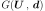

FORM¶
-
class
FORM(*args)¶ First Order Reliability Method (FORM).
Refer to FORM.
- Available constructors:
FORM(nearestPointAlgorithm, event, physicalStartingPoint)
- Parameters
- nearestPointAlgorithm
OptimizationAlgorithm Optimization algorithm used to research the design point.
- event
Event Failure event.
- physicalStartingPointsequence of float
Starting point of the optimization algorithm, declared in the physical space.
- nearestPointAlgorithm
See also
Analytical,AnalyticalResult,SORM,StrongMaximumTest,FORMResultNotes
See
Analyticalfor the description of the first steps of the FORM analysis.The First Order Reliability Method (FORM) consists in linearizing the limit state function  at the design point, denoted
 , which is the point on the limit state surface
that is closest to the origin of the
standard space.
, which is the point on the limit state surface
that is closest to the origin of the
standard space.Then, the probability
 where the limit state surface has been
approximated by a linear surface (hyperplane) can be obtained exactly, thanks
to the rotation invariance of the standard distribution
where the limit state surface has been
approximated by a linear surface (hyperplane) can be obtained exactly, thanks
to the rotation invariance of the standard distribution  :
:
where
 is the Hasofer-Lind reliability index, defined as the
distance of the design point
is the Hasofer-Lind reliability index, defined as the
distance of the design point  to the origin of the standard
space and
to the origin of the standard
space and  the marginal cumulative density function of the spherical
distributions in the standard space.
the marginal cumulative density function of the spherical
distributions in the standard space.The evaluation of the failure probability is stored in the data structure
FORMResultrecoverable with thegetResult()method.Examples
>>> import openturns as ot >>> myFunction = ot.SymbolicFunction(['E', 'F', 'L', 'I'], ['-F*L^3/(3*E*I)']) >>> myDistribution = ot.Normal([50.0, 1.0, 10.0, 5.0], [1.0]*4, ot.IdentityMatrix(4)) >>> vect = ot.RandomVector(myDistribution) >>> output = ot.CompositeRandomVector(myFunction, vect) >>> event = ot.Event(output, ot.Less(), -3.0) >>> # We create an OptimizationAlgorithm algorithm >>> solver = ot.AbdoRackwitz() >>> algo = ot.FORM(solver, event, [50.0, 1.0, 10.0, 5.0]) >>> algo.run() >>> result = algo.getResult()
- Attributes
thisownThe membership flag
Methods
Accessor to the result.
Accessor to the object’s name.
getEvent()Accessor to the event of which the probability is calculated.
getId()Accessor to the object’s id.
getName()Accessor to the object’s name.
Accessor to the optimization algorithm used to find the design point.
Accessor to the starting point of the optimization algorithm.
Accessor to the result of FORM.
Accessor to the object’s shadowed id.
Accessor to the object’s visibility state.
hasName()Test if the object is named.
Test if the object has a distinguishable name.
run()Evaluate the failure probability.
setEvent(event)Accessor to the event of which the probability is calculated.
setName(name)Accessor to the object’s name.
setNearestPointAlgorithm(solver)Accessor to the optimization algorithm used to find the design point.
setPhysicalStartingPoint(physicalStartingPoint)Accessor to the starting point of the optimization algorithm.
setResult(formResult)Accessor to the result of FORM.
setShadowedId(id)Accessor to the object’s shadowed id.
setVisibility(visible)Accessor to the object’s visibility state.
-
getAnalyticalResult()¶ Accessor to the result.
- Returns
- result
AnalyticalResult Result structure which contains the results of the optimisation problem.
- result
-
getClassName()¶ Accessor to the object’s name.
- Returns
- class_namestr
The object class name (object.__class__.__name__).
-
getEvent()¶ Accessor to the event of which the probability is calculated.
- Returns
- event
Event Event of which the probability is calculated.
- event
-
getId()¶ Accessor to the object’s id.
- Returns
- idint
Internal unique identifier.
-
getName()¶ Accessor to the object’s name.
- Returns
- namestr
The name of the object.
-
getNearestPointAlgorithm()¶ Accessor to the optimization algorithm used to find the design point.
- Returns
- algorithm
OptimizationAlgorithm Optimization algorithm used to research the design point.
- algorithm
-
getPhysicalStartingPoint()¶ Accessor to the starting point of the optimization algorithm.
- Returns
- point
Point Starting point of the optimization algorithm, declared in the physical space.
- point
-
getResult()¶ Accessor to the result of FORM.
- Returns
- result
FORMResult Structure containing all the results of the FORM analysis.
- result
-
getShadowedId()¶ Accessor to the object’s shadowed id.
- Returns
- idint
Internal unique identifier.
-
getVisibility()¶ Accessor to the object’s visibility state.
- Returns
- visiblebool
Visibility flag.
-
hasName()¶ Test if the object is named.
- Returns
- hasNamebool
True if the name is not empty.
-
hasVisibleName()¶ Test if the object has a distinguishable name.
- Returns
- hasVisibleNamebool
True if the name is not empty and not the default one.
-
run()¶ Evaluate the failure probability.
Notes
Evaluate the failure probability and create a
FORMResult, the structure result which is accessible with the methodgetResult().
-
setEvent(event)¶ Accessor to the event of which the probability is calculated.
- Parameters
- event
Event Event of which the probability is calculated.
- event
-
setName(name)¶ Accessor to the object’s name.
- Parameters
- namestr
The name of the object.
-
setNearestPointAlgorithm(solver)¶ Accessor to the optimization algorithm used to find the design point.
- Parameters
- algorithm
OptimizationAlgorithm Optimization algorithm used to research the design point.
- algorithm
-
setPhysicalStartingPoint(physicalStartingPoint)¶ Accessor to the starting point of the optimization algorithm.
- Parameters
- pointsequence of float
Starting point of the optimization algorithm, declared in the physical space.
-
setResult(formResult)¶ Accessor to the result of FORM.
- Parameters
- result
FORMResult Structure containing all the results of the FORM analysis.
- result
-
setShadowedId(id)¶ Accessor to the object’s shadowed id.
- Parameters
- idint
Internal unique identifier.
-
setVisibility(visible)¶ Accessor to the object’s visibility state.
- Parameters
- visiblebool
Visibility flag.